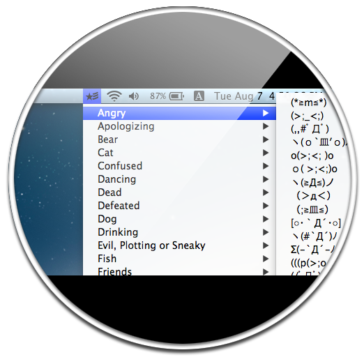
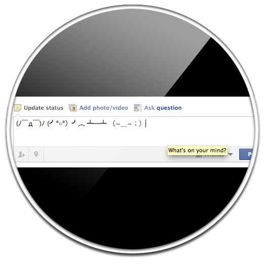
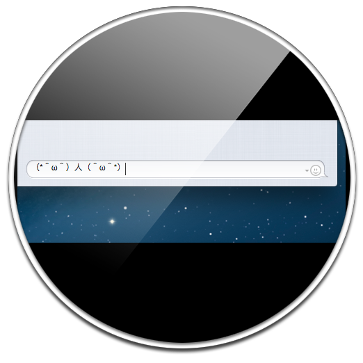

Easy.
Access list of kaomoji easily from menu bar
(´▽｀)ノ♪

Fast.
Or use keyboard shortcut ctrl+shift+e to show the menu fast
Ｏ(≧∇≦)Ｏ

Simple.
Enter Kaomoji to any apps in your Mac
(ノ＞▽＜。)ノ
Download Kaomoji
For OS X Lion or later. License is needed to unlock all Kaomoji.
Download the Kaomoji.zip. Extract and copy Kaomoji.app to /Applications folder. Run and enjoy! ヽ(*⌒∇⌒*)ﾉ